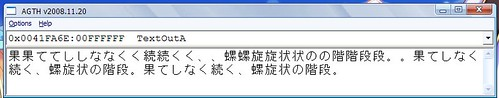
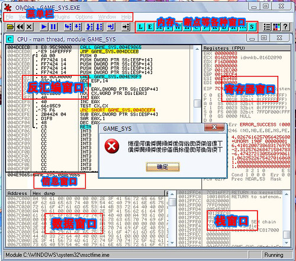
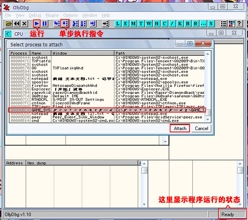
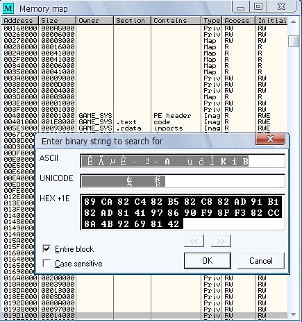
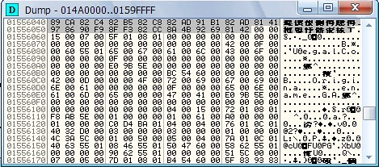
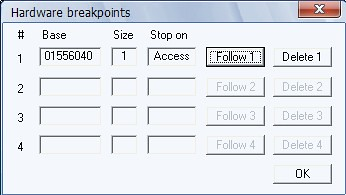
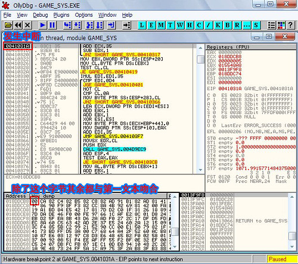
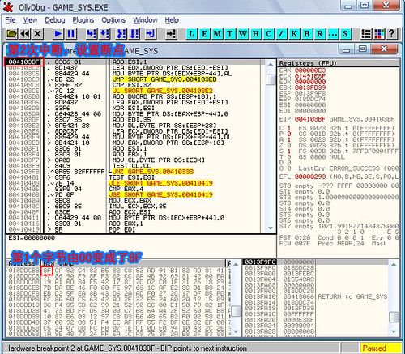
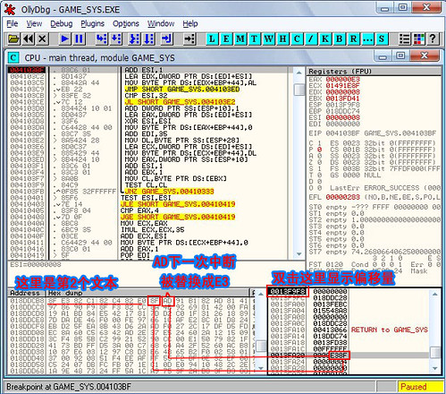
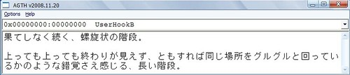

以下内容使用的专业术语很可能不规范，欢迎指正。
本文只为抛砖之举，如果你想了解更多可以学习Freaka大的视频教程
http://www.hongfire.com/forum/showthread.php?t=80401如果要转帖的话请PM并注明作者：酷酷蛋蛋
Quote:
有问题跟帖提问 必须附图
问题集：
问：果てしなく続く、螺旋状の階段。
89 CA 82 C4 82 B5 82 C8 82 AD 91 B1 82 AD 81 41 97 86 90 F9 8F F3 82 CC 8A 4B 92 69 81 42
这句话怎么转换成16位码的?
答：两个方法：
1.http://www.hongfire.com/forum/showthread.php?t=80401进入这个网页 下载那个附件
2.http://bbs.sumisora.net/read.php?tid=10924359 进入这个网页 给OLLYDBG装蹭得累的插件 感谢粉肠
http://bbs.sumisora.net/read.php?tid=10942138&page=e#a 这个是改版 感觉还是蹭得很累...
问：为什么楼主（作者）不回答我的问题？
答：如果你有问题请先爬楼，有些问题已经有人提问过，我也已经回复了。如果没有找到答案，请跟帖提问。提问必须上图！
入正题，我们推GAL外挂Agth的时候经常会发现无法提取文本，或者提取的文本不完整，提取重复之类的问题
这时候我们就需要一个叫特殊码的东东，例如ダンジョンクルセイダーズ2～永劫の楽土～这款游戏
直接外挂Agth时我们可见
文本多次重复，相当混乱。
而现在再用命令（WIN+R打开运行窗口输入CMD）X:\agth /c /HB28@4103B8 /pnGAME_SYS.EXE 外挂Agth时文本就正常显示了。
现在我们去弄清楚这个/HB28@4103B8是怎么得出来的。
首先，我们需要OllyDbg这个调试软件。下载请去官网：
http://www.ollydbg.de/可以看见v2.0版正在开发中，但功能还不完善，所以我们下载v1.10版。
在开始调试程序之前，我需要把游戏里的一开始显示的两次文本转换成16位码，因为我们在调试窗口将不可能看到日文。
果てしなく続く、螺旋状の階段。
89 CA 82 C4 82 B5 82 C8 82 AD 91 B1 82 AD 81 41 97 86 90 F9 8F F3 82 CC 8A 4B 92 69 81 42
上っても上っても終わりが見えず、
8F E3 82 C1 82 C4 82 E0 8F E3 82 C1 82 C4 82 E0 8F 49 82 ED 82 E8 82 AA 8C A9 82 A6 82 B8 81 41
这里要注意一个双字（4位）才是一个日文。
Fine.现在打开OllyDbg开始调试程序。
点开菜单栏的File-->Open.选择ダンジョンクルセイダーズ2～永劫の楽土～的游戏主程序GAME_SYS.EXE
之后按F9运行游戏。这时发生了一个错误游戏终止了。
由于这个游戏需要AppLocale打开才能运行，所以不能直接调试。
不要紧。我还有另一种方法对付。
先用AppLocale打开游戏运行起来，再打开OllyDbg，点开File-->Attach,在列表中选择目标程序GAME_SYS.EXE
现在再按F9运行就没再出错了。
现在到游戏窗口，开始游戏，点击START GAME，出现游戏对白
回到OllyDbg，ALT+M打开内存窗口（Memory map），CTRL+B搜索我们看到的那一句游戏对白。
也就是89 CA 82 C4 82 B5 82 C8 82 AD 91 B1 82 AD 81 41 97 86 90 F9 8F F3 82 CC 8A 4B 92 69 81 42
点OK得到第一次搜索结果。
可以看到灰色所选16位码跟文本转换后的16位码完全吻合。
然后我在第一个字节（89）那里点一下选中，右击-->Breakpoint-->Hardware,on access-->Byte
这样就设置了一个断点。断点就像做记号一样，它会在程序运行到这个地方时就暂停下来，让你看清楚发生了什么。
我们可以在菜单栏-->Debug-->Hardware breakponits里看到所设置的断点。在设置断点前请保证这里是清空的。
继续在Dump窗口搜索下一个吻合的字符串（CTRL+L），
发现底部状态栏亮起一条黄边，这表示已经没有再多的搜索结果了。
之后，我们回到内存窗口（Memory map）继续搜索下一个（CTRL+L）吻合的字符串。
同样，我设置了第2个断点。

之后继续搜索内存窗口，发现底部亮起了黄边，那搜索完成了。
断点已经设置好了，我们看看游戏什么时候发生中断。
回到游戏，点击鼠标显示下一句游戏对白。
这时候游戏没响应了（别以为死机了 - =）而OllyDbg的界面提前到眼前。
Good！这表示游戏在读取下一段文本的时候被中断了，我们正是需要在这个时候让Agth把文本抽取出来。
之后只要把地址拿到就行了。
程序在41031Ah中断了。
信息窗口显示ECX=018DDCB8 我们看看里面有什么？
选中它，右击选择Follow value in Dump
发现了吗，里面除了第1个字节是00外，正好是游戏第一句文本。
看来我们找对地方了!
回来看41031Ah的反汇编指令，如果你懂汇编的话可以发现这貌似一段清0指令。
我们是菜鸟所以我们不管它。
我点单步运行，发现指令在410317h到410320h里跳转，这是一个循环。
我没有耐性，直接按了F9运行游戏。
第2次中断发生在4103BF
这时候我发现数据窗口第1个字节变成了(8F)!
这正好是第2个文本的第1个字节!我没猜错的话已经离胜利不远了!
我选中4103BFh ，按F2设置下一个断点，那里变得通红。
我们可以按ALT+B看到我们的另一个断点窗口。（这叫做INT3断点，不过我们是菜鸟所以我们不管他叫什么）

我点开菜单栏-->Debug-->Hardware breakponits,把两个硬件断点删掉（Delete），我已经不再需要它们了。
再次按F9运行游戏。程序在我设置的断点4103BFh停下来。
发现数据窗口第2和第3个字节变成了（E3 82），接下来是（C1 82），（C4 82）。
Bingo!这就是我们的第2个文本。我们的目标在数据窗口显示的地址018DDCB8h里面。
我仔细观察寄存器窗口和栈窗口，并没有发现018DDCB8这个值。
可恶，难道我这只菜鸟就在这里止步吗？
我再一次按下F9运行游戏，盯住寄存器窗口和栈窗口寻找蛛丝马迹。
发现在栈窗口0013FA20h里的值为（E38F），而这正好与数据窗口刚刚变化的（E0 8F）有一个字节是吻合的。
继续按下F9，栈窗口0013FA20h里的值为（C182），（C482），（E082），（498F）
我发现把如果排列成（82 C1）（82 C4）（82 E0）（8F 49）的话正是我们的第2个文本接下来那一段!
（大概因为压栈的时候是低位压进高位，所以反过来了）
OK!特殊码出来了!
/H表示Agth的特殊码模式，之后我们可以选择三个命令/HA /HB /HS ，/HA /HB都是取双字节的，/HS是取整个句子的。
由于这里我们是每运行一次游戏，而后发生中断，在数据窗口里都只是改变1个双字节，所以我先用/HB碰运气。
之后需要让Agth获得这个双字节，需要一个偏移量。

在栈窗口第一个地址那里双击，变成了一列偏移量的值。我们找到（498F）对应的值是+28，所以就/HB28了。
之后写的就是我最后所设置的断点地址。用@连接。于是得出/HB28@4103BF 。
测试运行，Agth文本正常提取，至此完成。
[ 此帖被酷酷蛋蛋在2010-01-08 13:48重新编辑 ]